홈 › 카페트 청소
사무실 카페트 청소,
섬유 깊이까지 씻어 냅니다
pH 7.0 중성세제로 오염을 풀고, 고압으로 헹구는 동시에 빨아들입니다. 현장에 맞춰 이동형 습식 고압세척과 트럭마운트 고온 스팀을 골라 씁니다.
- pH 7.0 중성세제
- 비품 정리 · 원위치까지
- 견적 방문 무료
왜 세척해야 하나
눈에 안 보이는 먼지와 세균이
카페트에 쌓입니다
사무실 · 업소 · 병원 · 은행에 깔린 카페트는 공간의 인상을 만드는 인테리어입니다. 하지만 오래 쓰면 미세먼지와 세균, 진드기가 쌓여 피부질환이나 비염의 원인이 될 수 있습니다. 습식 · 스팀 세척은 넓은 면적 전체의 오염을 씻어 내고 카페트 수명도 늘려 줍니다.
실제 현장에서 같은 자리를 작업 전과 후에 찍은 사진입니다. 겹쳐 보이도록 위치만 맞췄습니다.
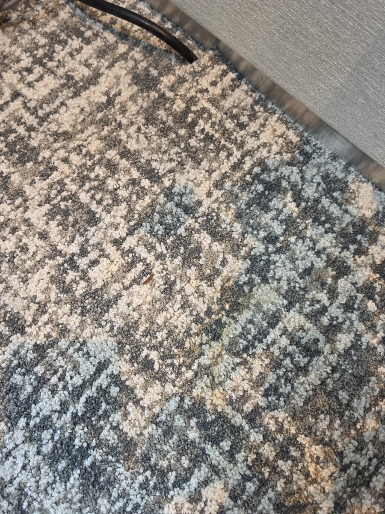
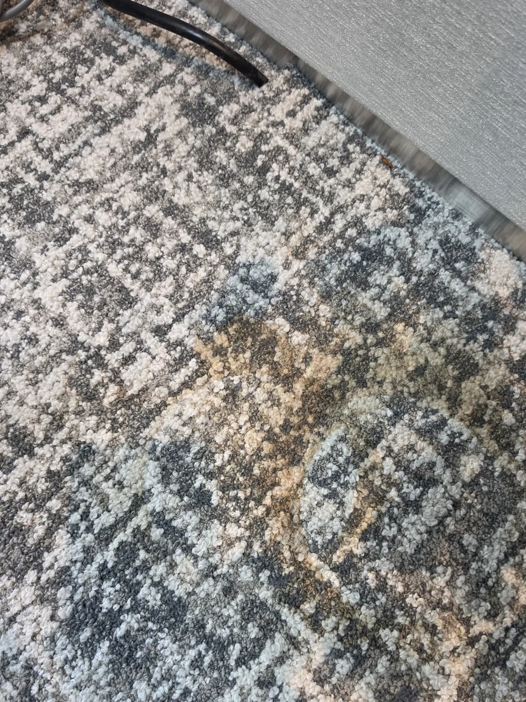
작업 전작업 후습식 고압세척 4공정
풀고, 문지르고,
헹구며 빨아들입니다
습식 고압세척은 네 공정으로 나뉩니다. 사람이 많이 다니는 동선과 책상 밑처럼 오염이 심한 곳은 한 번 더 손봅니다.
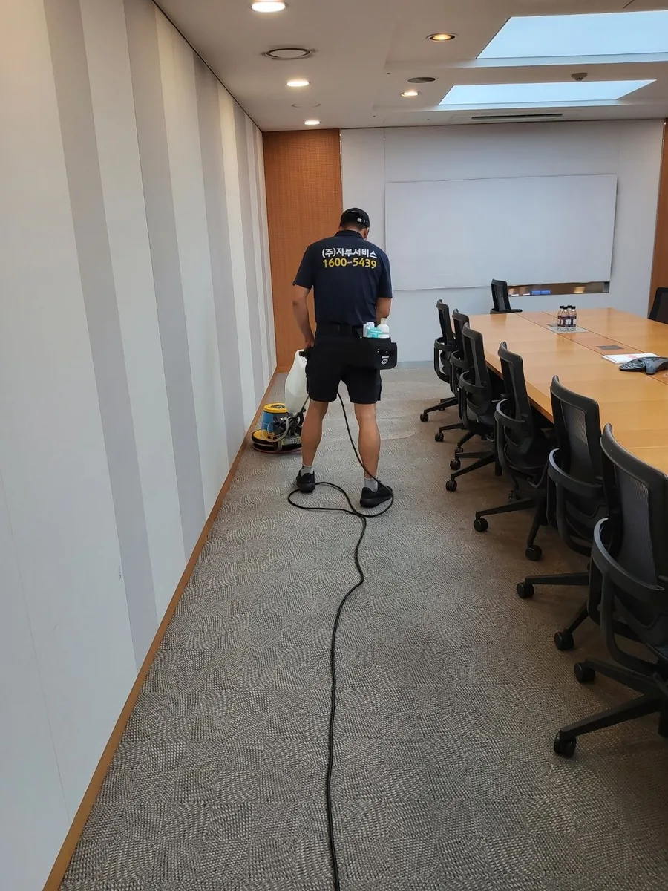
현장 · 회의실 전처리PRE-SPRAY
세제와 살균제를 섞어 카페트 전체에 고르게 뿌려 오염을 불립니다.
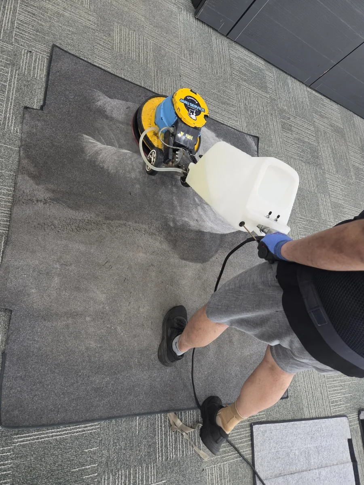
현장 · 로타리 머신 본넷BONNET
오염이 심한 동선과 책상 밑을 로타리 머신과 패드로 문질러 오염을 분해합니다.
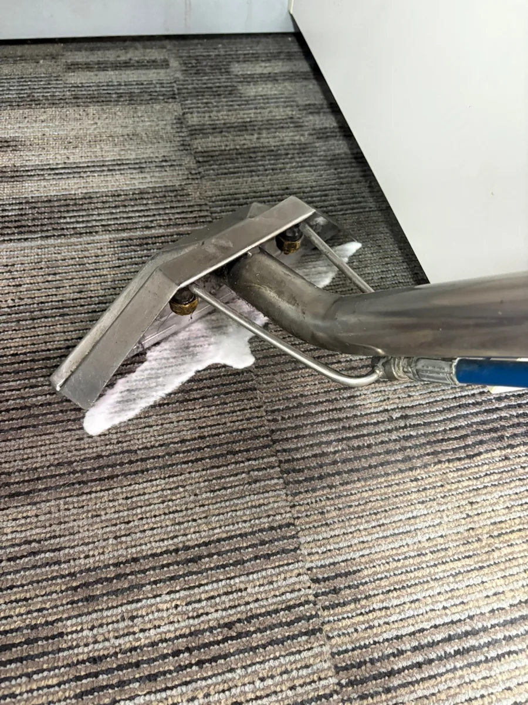
현장 · 세척 완드 헹굼 · 흡입EXTRACTION
깨끗한 물을 300 PSI로 뿌려 헹구는 동시에 오점 · 먼지 · 이물질을 빨아들입니다.
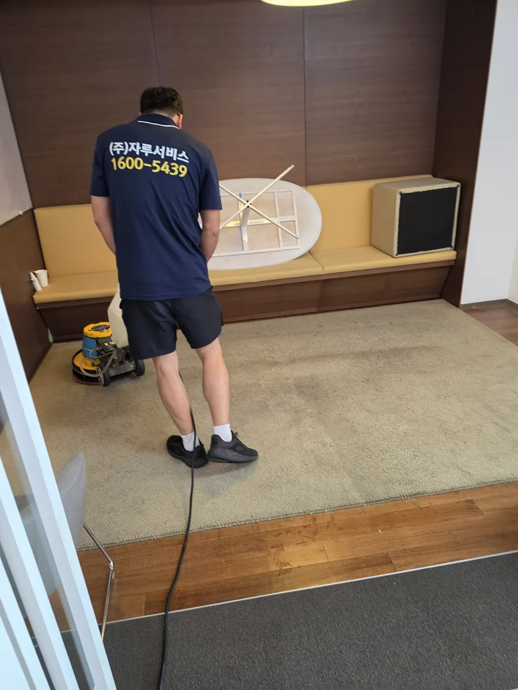
현장 · 마무리 린스RINSE
오점을 점검하고, 동선 · 통로 · 음수대 주변은 드라이폼과 천 패드로 카페트 면을 한 번 더 닦습니다.
카페트 세탁 8단계
비품 정리부터 원위치까지
저희가 합니다
책상 아래 짐과 의자를 옮기는 일부터 작업이 끝난 뒤 제자리에 돌려놓고 물기를 닦는 일까지 모두 포함입니다.
비품 정리 · 구역 확보
비품 · 서류 · 의자를 옮겨 바닥을 비웁니다. 개인 의자는 이름을 확인해 둡니다.
진공청소
오염도에 따라 진공청소로 먼지를 먼저 걷어 냅니다.
전처리
세제와 살균제를 섞어 카페트에 뿌립니다.
오염 분해(본넷)
카페트 전용 머신으로 섬유 속 오염을 풀어 줍니다.
헹굼 · 흡입
깨끗한 물로 헹구는 동시에 300 PSI로 빨아들입니다. 트럭마운트 현장은 고온 스팀으로 합니다.
오점 점검 · 린스
남은 오점을 확인하고 동선 · 통로 · 음수대 주변을 천 패드로 한 번 더 닦습니다.
비품 원위치
옮겼던 비품과 의자를 이름표를 확인해 섞이지 않게 제자리에 둡니다.
뒷정리 · 최종 점검
화장실 · 복도의 물기까지 정리하고 카페트 전체 상태를 점검합니다.
pH 7.0 중성세제
섬유는 지키고
오염만 풀어 냅니다
산성도 알칼리성도 아닌 pH 7.0 중성세제를 씁니다. 색 바램이나 섬유가 뻣뻣해지는 문제가 적어 고급 카페트에도 안심하고 쓸 수 있습니다.
- STEP 1울트라 리프트pH 7.0 세정제 · 오염 분해
- STEP 2울트라 디오더항균 · 탈취
- STEP 3울트라 큐소독 마무리
PROCHEM 트럭마운트
넓은 층은 장비를 차에 두고,
호스만 올라갑니다
차량에 실린 장비가 뜨거운 고압 스팀을 만들어 최대 360m 호스로 보냅니다. 장비를 층마다 옮기지 않으니 넓은 층도 빠르게 끝납니다.
보유 장비
트럭마운트부터
이동형 장비까지
차량에 싣는 대형 장비부터 층마다 옮겨 쓰는 이동형 장비까지, 현장 넓이와 동선에 맞춰 고릅니다.
이동형 습식 장비
EDIC GALAXY 익스트랙터
이동형 · 펌프 300 PSI · 흡입 모터 3,520 W
흡입 모터 2개(3단) · 흡입력 210인치 · 세액 65 L / 폐수 60 L · 무게 44 kg. 부식과 충격에 강한 폴리에틸렌 탱크에 큰 뒷바퀴를 달아 옮기기 쉽고, 300 PSI 고압으로 헹굼과 흡입을 동시에 합니다.
카펫 전용 진공청소기
3중 필터 · 1㎛ 먼지까지
나선형 로터 브러시가 카펫을 두드리며 먼지를 쓸어 내고 결을 살립니다. 연속 400시간 사용, 흡입구 자석이 쇳조각을 걸러 모터를 지킵니다.
로타리 머신 20인치
GENERAL MBL20D · 200 RPM · 80 kg
높은 하중과 회전력으로 카페트 속 오염을 풀어 냅니다. 바닥 세척과 연마에도 씁니다.
로타리 머신 16인치
MINUTEMAN · 200 RPM · 50 kg(+추 30 kg)
카페트 세척, 대리석 연마, 바닥 왁스 작업에 씁니다.
충전식 전처리 분무기
분사력 100 PSI
세제와 살균제를 섞은 전처리액을 카페트 전체에 고르게 뿌립니다.
트럭마운트 · 스팀 장비
PROCHEM EVEREST
트럭마운트 · 3,000 PSI · 64마력
최대 360m까지 작업 가능. 자동 온수, 약품 자동 희석, 폐수 자동 처리 장치를 갖췄습니다.
PROCHEM PERFORMER
트럭마운트 · 최대 1,000 PSI · 32마력
차량에 장착한 채로 180m 떨어진 곳까지 분사와 흡입을 동시에 합니다.
CFR PRO STATION 400
약품 재활용식 · 400 PSI
섬유 손상 없이 철저하게 세척하고 건조 시간이 짧습니다.
CHEYENNE · CHEROKEE
이동식 카페트 세척기
좁은 공간과 소파 · 의자 크리닝에 쓰는 이동이 쉬운 장비입니다.
WARRIOR
카페트 건조기 · 풍속 3단
카페트, 대리석, 나무 바닥 건조에 씁니다.
KC20D 왁스머신
175 RPM · 1.5 HP
아스타일 · 대리석 등 어떤 바닥에도 쓸 수 있는 광택 장비입니다.
작업 기록
카페트 섬유 속에서
이런 것이 나옵니다
실제 현장에서 카페트를 세척하며 걷어 낸 오염수와 먼지 뭉치입니다. 청소기로는 닿지 않는 섬유 아래에 쌓여 있던 것들입니다.
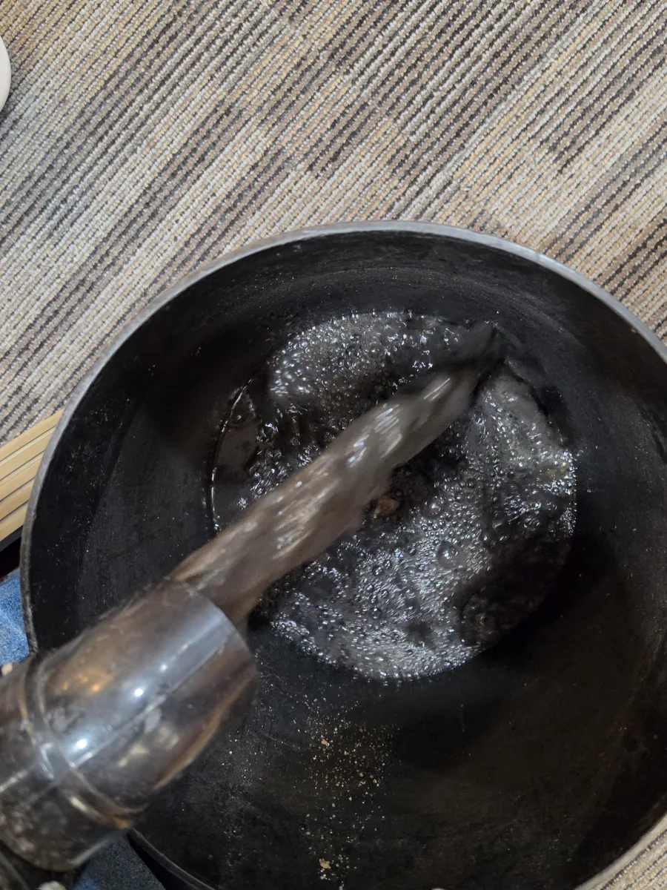
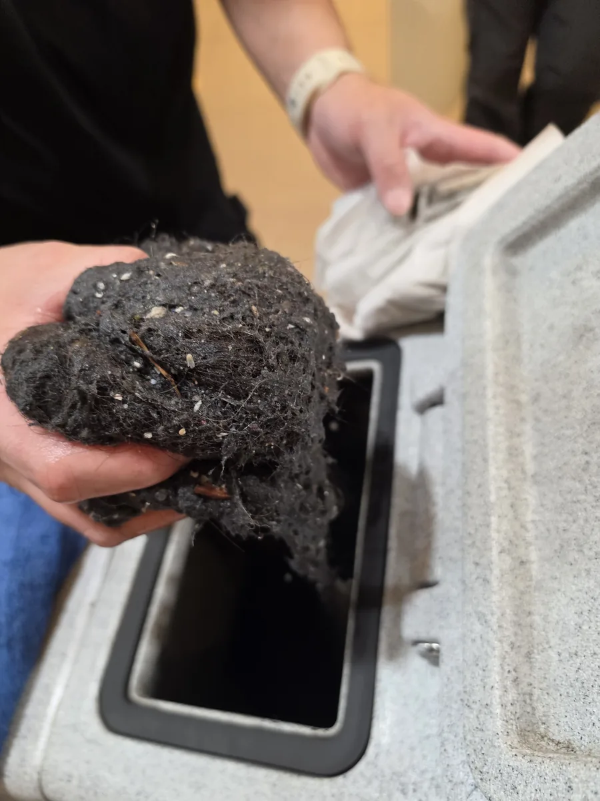
작업 전 안내
미리 말씀드리는 것들
섬유에 물이 든 커피 얼룩이나 화분에서 흘러내린 물 자국은 세척 후 누렇게 남을 수 있습니다(황변). 오염이 아니라 섬유가 물든 것이라 세척으로 빠지지 않는 경우가 있습니다.
의자는 이름표를 확인해 책상 위에 올리거나 한쪽으로 옮겨 가며 작업하고, 끝나면 섞이지 않게 제자리에 돌려놓습니다.
작업 뒤 화장실과 복도에 남은 물기까지 정리하고, 카페트 전체 상태를 점검한 뒤 마칩니다.
함께 맡기면 좋은 작업
카페트 하는 날,
의자 · 파티션도 같이
같은 장비로 사무용 의자, 파티션, 소파 세탁과 버티컬 · 블라인드 초음파 세척까지 하루에 끝낼 수 있습니다.
- 의자 세탁
- 파티션 세탁
- 소파 세탁
- 버티컬 · 블라인드
- 바닥 왁스
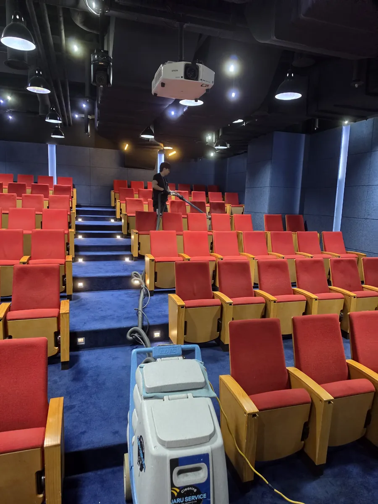
현장 사진
실제 작업 현장
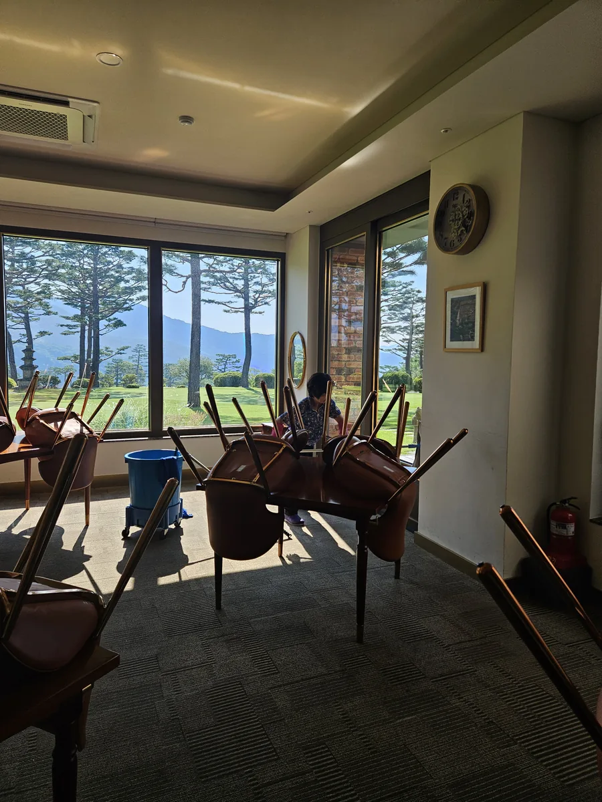
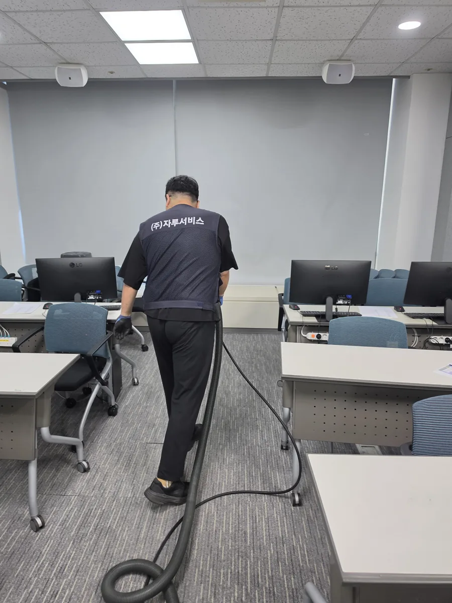
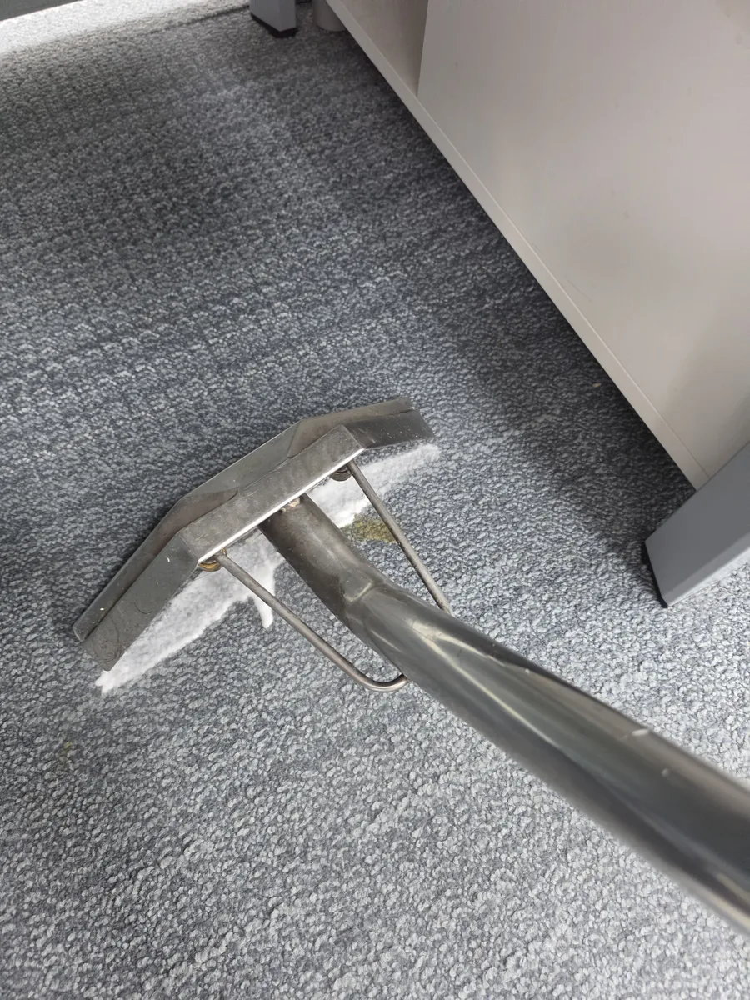
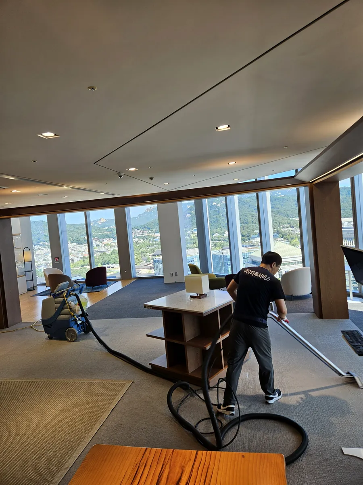
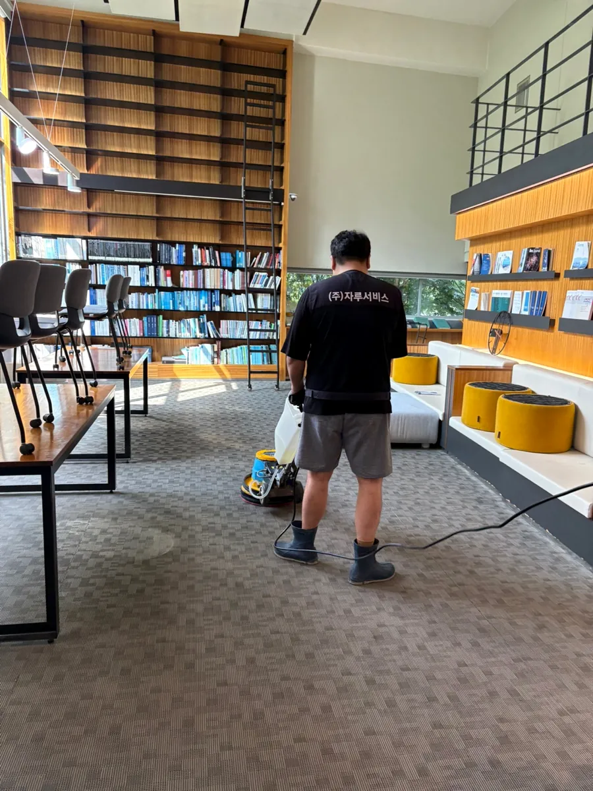
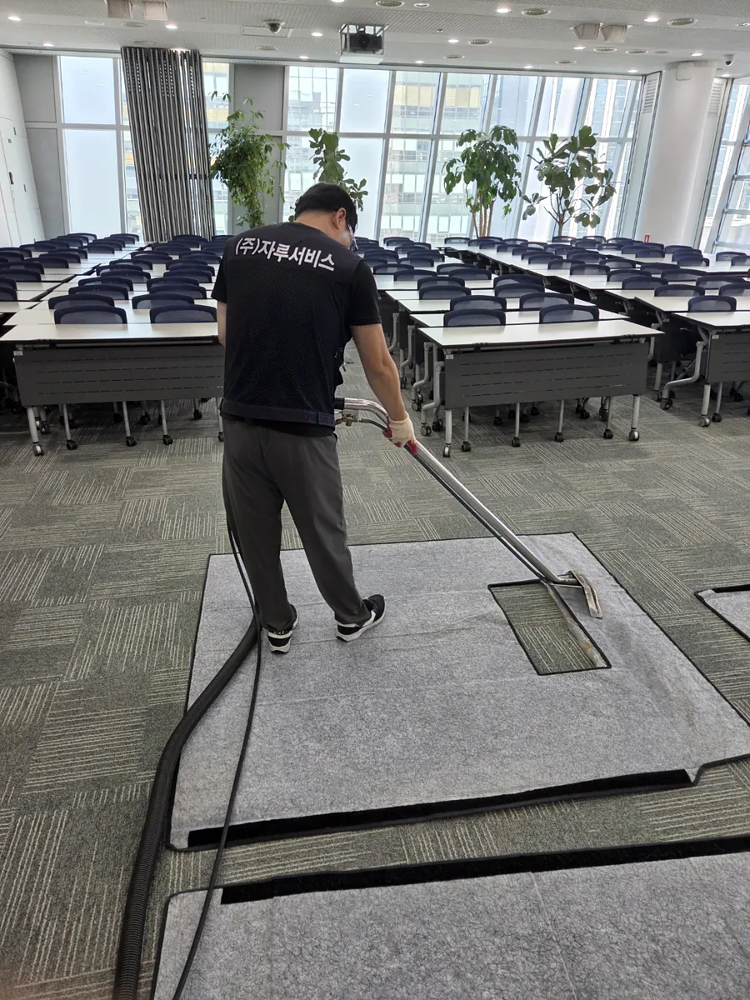
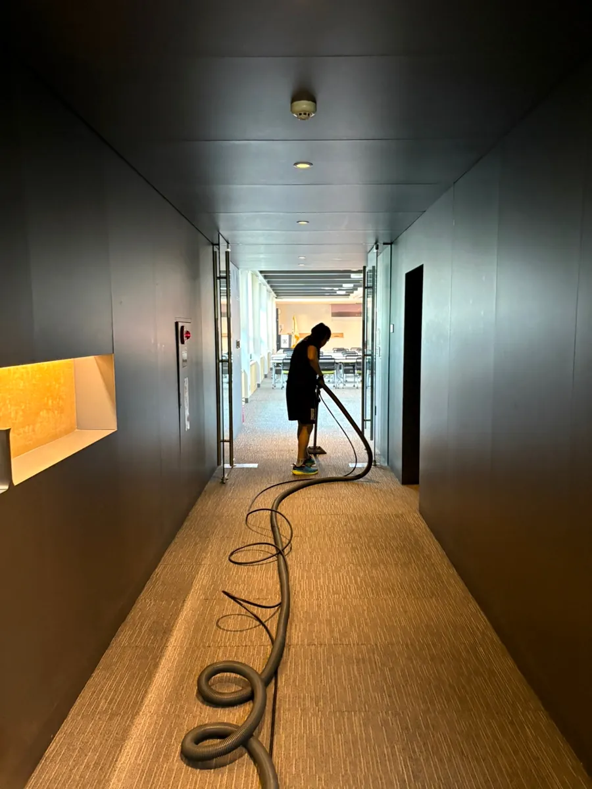
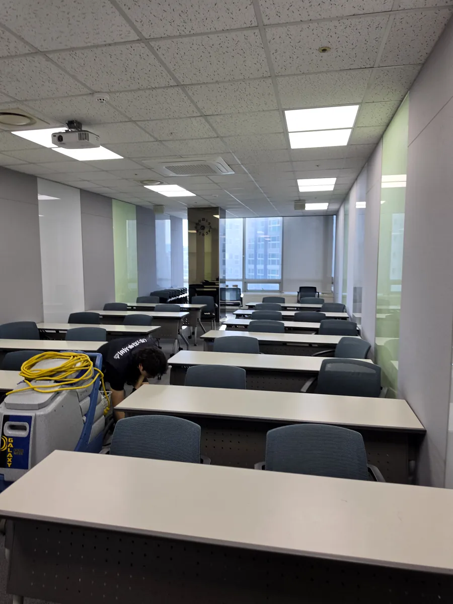
자주 묻는 질문
카페트 청소,
많이 물어보십니다
Q1커피 얼룩도 지워지나요?
대부분의 오염은 세척으로 빠지지만, 오래된 커피 얼룩이나 화분에서 흘러내린 물 자국은 섬유에 물이 든 것이라 세척 후 누렇게 남을 수 있습니다(황변). 작업 전에 미리 말씀드립니다.
Q2카페트 세제는 어떤 것을 쓰나요?
pH 7.0 중성세제를 씁니다. 세정제, 항균 · 탈취제, 소독제를 순서대로 써서 섬유 손상과 색 바램을 줄이고, 남는 세제 찌꺼기가 적어 끈적임이 거의 없습니다.
Q3의자와 비품은 누가 옮기나요?
작업팀이 옮깁니다. 비품과 의자를 정리해 청소 구역을 비우고, 작업이 끝나면 개인 의자 이름표를 확인해 제자리에 돌려놓습니다.
Q4견적 방문에 비용이 드나요?
아니요. 모든 견적 방문은 무료입니다. 견적서를 확인하신 뒤 계약 여부를 정하시면 됩니다.